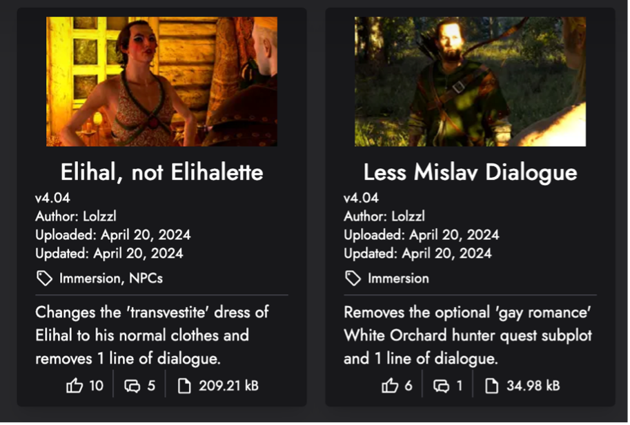

The Witcher 4 trailer revealed more than the return of an acclaimed franchise: it also revealed a new, fiercely identitarian audience that is beginning to organize.
During the Game Awards 2024 ceremony, the long-awaited cinematic trailer for The Witcher 4 was finally revealed. After the resounding success of The Witcher 3: Wild Hunt in 2015, both in sales and in reviews, it was only a matter of time before CD Projekt Red announced a sequel. It took nine years, but the confirmation finally came. And with it, a significant change: Geralt, the protagonist of the first three games, will apparently give way to his adoptive daughter, Ciri, as the main character.
But more than the speculation about new combat mechanics or the direction of the story, what drew attention was the reaction of a specific group of gamers to Ciri's leading role. This is a segment that calls itself anti-woke, rejecting any progressive element in works of pop culture — something I will call here illiterate conservatism.
Illiterate Conservatism
Illiterate conservatism is not merely a critical stance or an occasional rejection of progressive themes. It is a dogmatic identity politics in which acceptance or rejection of a work depends solely on its adherence to a rigid set of conservative values. If anything considered woke is found in a work, it is rejected outright.
One telling expression of this is a Steam community group called Woke Game Detector. With more than 2,000 members and over 6,000 followers, the group's purpose is to rate games according to the level of woke content found in them, classified on the following scale:
"Recommended" = no woke themes found. "Informational" = woke themes present, but with no specific or subtle message. "Not Recommended" = woke themes present with a message.
Working from this scale, followers and members would know in advance which games to buy, avoiding exposure to a kind of content that runs against the dogmas set out by the identity they have assumed. According to the group's description, woke content includes: "pro-LGBTQ+, pro-DEI (Diversity, Equity and Inclusion), pro-climate action, pro-communism/socialism, pro-abortion, pro-pedophilia, pro-immigration, pro-transhumanism, anti-Western society, anti-humanity, anti-colonialism, anti-capitalism, anti-heterosexuality, anti-patriarchy, anti-white, anti-family, anti-free speech, anti-guns, etc." All of this, through the lens of such a group, is seen as a threat to the integrity of gamer culture.
Mods as Purification
Even so, some games appear to be attractive enough to cut across that identity politics. But for that, the anti-woke gamer community has a solution: mods, or community-made modifications that alter or remove "undesirable" aspects of games. On the ModHQ site, for instance, it is possible to download modifications that remove LGBTQIA+ characters, alter and/or remove dialogue considered progressive, change the appearance of Black NPCs to white, or even alter in-game statues into the pose of the Nazi salute. Two of these mods in particular revisit minor events in The Witcher 3: one eliminates a dialogue in which a male character mentions his romance with another man; the other alters the quest where a male NPC is found dressed as a woman, suggesting he would be a drag queen. Although the game was released in 2015, these mods were created only in 2024, which draws attention to the recent emergence of this anti-woke identity politics in a more organized form.

The Witcher 4 and the Failure to Read
And how does this connect to The Witcher 4 trailer? Well, Ciri's leading role — a woman character — in the six-minute cinematic was enough to draw the fury of these anti-woke gamers. And with that, we can get to illiterate conservatism.
Anyone who has played the previous games — or at least the third one in particular — would already have known in advance that this change was coming. Ultimately, the narrative told across the last game is precisely a passing of the torch from Geralt to Ciri. The most critical moments for the narrative, which depend on the player's choices to reach its "correct" ending, involve Geralt taking up his role as a father who gives way to Ciri rather than taking the lead in her place, trusting her abilities and making room for her to become an adult woman and a formidable warrior. Beyond that, over the course of the game we get to play as Ciri for brief stretches and see how extremely powerful she is, leaving behind a feeling of "I want more" and the anticipation of what is to come in the next title.
Finally, the themes the game takes up, especially in its side quests, are very much what would be classified today as "woke" — but they either went unnoticed or were not considered a problem in 2015 by these same gamers. In many of the game's quests, Geralt is hired to kill monsters supposedly causing some harm, but in the end the player discovers they are nothing more than people who have been discriminated against and/or brutalized, usually on the basis of deep-rooted beliefs and prejudices. In other cases, the monsters and curses Geralt must resolve are the result of humanity's own villainy: in exercising their prejudices, people create the very evil that later returns to haunt them. Not to mention the witch hunt, which emulates its historical version with very little subtlety. As Geralt himself says in the game: "hatred and prejudice will never be eradicated, and witch hunts will never be about witches. To have a scapegoat — that's the key."
Even though it rests on allegories of monsters and magic, the game's message is quite clear. But there is no clarity that illiterate conservatism cannot obscure with its incapacity for textual interpretation. And so the leading role of a female character was met by this anti-woke audience with the same torches and pitchforks the villagers of the previous game carried — the very ones Geralt stood against.
Fans, or Opportunists?
Conservative militancy has formed identity groups with a force equal to or greater than that of the progressive identity politics of years past. Now organized in online groups, anti-woke gamers put in a great deal of work to filter or even modify works that do not align with the values they identify with. Mixed with illiterate conservatism, even franchises built out of progressive ideas end up becoming targets of such movements. And the question that remains is: are they really fans of franchises like The Witcher? Or are they merely instrumentalizing these games as a platform to express their prejudices?
I dare believe we are talking about people who have never played these games, and that we are dealing with opportunists who never took an interest in the franchise until they found in the recent trailer a chance to carry out their misogynistic militancy. At the same time as these "critiques" became visible across social networks, a countermovement could also be found. Memes in various formats resignify figures like "chads" and "betas" by inverting their positions: misogynistic betas shamefully reject the Witcher 4 trailer for having a female protagonist and therefore being woke, while a chad version of Geralt stands in for the authentic fan of the franchise, who happily welcomes the reveal and hopes the card game Gwent returns in the new title.
We are left to see how productions in the games industry will react to this phenomenon. It also remains an open question whether this group is genuinely large and capable of affecting sales — especially given the emergence of mods catering to this conservative identity — or whether it is another case of a minority that simply shouts louder.
And, finally, the doubt that lingers: how do you engage an audience that, out of identitarian fundamentalism, refuses works before even encountering them?
// Note: This is a translated version of the original Portuguese text. The author will review and revise this translation.